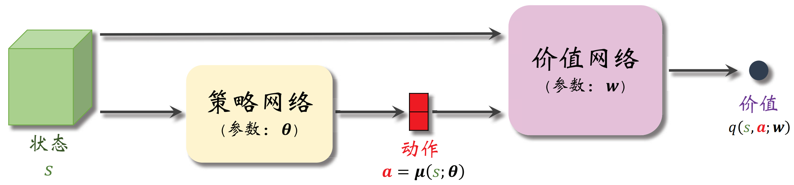

基于策略的算法（Policy-Based）
基于价值的算法通过学习 q⋆(s, a) 进而恢复出最优策略 π⋆，而基于策略的方法则是显式学习一个目标策略。
策略梯度
将一个静态马尔可夫随机策略参数化为 πθ(a∣s)，为了最大化策略的期望回报，定义目标函数：
J(θ)=Es0∼b0(⋅)Ea0∼πθ(⋅∣s0)Er1∼r(⋅∣s0, a0)Es1∼p(⋅∣s0, a0)Ea1∼πθ(⋅∣s1)Er2∼r(⋅∣s1, a1)⋯ErT+1∼r(⋅∣sT, aT)[t=0∑Tγtrt+1]=Es0∼b0(⋅)Ea0∼πθ(⋅∣s0)Es1∼p(⋅∣s0 a0)Ea1∼πθ(⋅∣s1)⋯EsT∼p(⋅∣sT−1, aT−1)EaT∼πθ(⋅∣sT)[t=0∑TγtR(st, at)]=s0∑a0∑s1∑a1∑⋯sT∑aT∑[b0(s0)t=0∏Tπθ(at∣st)t=1∏Tp(st∣st−1, at−1)t=0∑TγtR(st, at)]
在策略的条件概率值 πθ(at∣st) 对策略参数 θ 求梯度时为了方便起见将形式重写为：
∇θπθ(at∣st)=πθ(at∣st)πθ(at∣st)∇θπθ(at∣st)=πθ(at∣st)∇θlnπθ(at∣st)
因此目标函数中策略条件概率的乘积项的梯度为：
∇θt=0∏Tπθ(at∣st)=t=0∏Tπθ(at∣st)t=0∑T∇θlnπθ(at∣st)
目标函数对策略参数 θ 求导得到（一行实在写不下了，期望下标中的条件分布暂时省略 😭）：
∇θJ(θ)=s0∑a0∑s1∑a1∑⋯sT∑aT∑[b0(s0)(∇θt=0∏Tπθ(at∣st))t=1∏Tp(st∣st−1, at−1)t=0∑TγtR(st, at)]=Es0Ea0Es1Ea1⋯EsTEaT[(t=0∑T∇θlnπθ(at∣st))⋅(t=0∑TγtR(st, at))]
考虑以上梯度中的一项乘积因子 ∇θπθ(at∣st)R(sτ, aτ) 在 t>τ 时的期望：
Es0Ea0Es1Ea1⋯EsTEaT[∇θlnπθ(at∣st)R(sτ, aτ)]=Es0Ea0Es1Ea1⋯EstEat[∇θlnπθ(at∣st)R(sτ, aτ)]
其中：
=Eat∼πθ(⋅∣st)[∇θlnπθ(at∣st)R(sτ, aτ)]=R(sτ, aτ)Eat∣πθ(⋅∣st)∇θlnπθ(at∣st)R(sτ, aτ)at∑πθ(at∣st)∇θlnπθ(at∣st)=R(sτ, aτ)∇θ1at∑πθ(at∣st)=0
因此所有 t>τ 的乘积因子项的期望均为 0，策略梯度简化为：
∇θJ(θ)=Es0Ea0Es1Ea1⋯EsTEaT[t=0∑T∇θlnπθ(at∣st)τ=t∑TγτR(sτ, aτ)]=t=0∑TEs0Ea0Es1Ea1⋯EstEat[∇θlnπθ(at∣st)⋅γtqπθ(t)(st, at)Est+1Eat+1⋯EsTEaTτ=t∑Tγτ−tR(sτ, aτ)]=t=0∑TγtEs0Ea0Es1Ea1⋯EstEat[∇θlnπθ(at∣st)qπθ(t)(st, at)]
由于：
Es0Ea0Es1Ea1⋯Est[f(st)]=s0∑a0∑s1∑a1∑⋯st∑b0(s0)τ=0∏t−1πθ(aτ∣sτ)τ=0∏t−1p(sτ+1∣sτ, aτ)f(st)=st∑f(st)s0∑a0∑s1∑a1∑⋯st−1∑b0(s0)τ=0∏t−1πθ(aτ∣sτ)τ=0∏t−1p(sτ+1∣sτ, aτ)=st∑f(st)bt(st)=Est∼bt(⋅)[f(st)]
其中 bt(⋅) 为初始状态分布 b0(⋅) 和策略 πθ 下状态 st 的边缘概率分布，基于此可以改写策略梯度形式为：
∇θJ(θ)=t=0∑TγtEst∼bt(⋅)Eat∼πθ(⋅∣st)[∇θlnπθ(at∣st)qπθ(t)(st, at)]
推广到无限期规划下：
∇θJ(θ)=t=0∑∞γtEst∼bt(⋅)Eat∼πθ(⋅∣st)[∇θlnπθ(at∣st)qπθ(st, at)]=t=0∑∞γts∑bt(s)a∑πθ(a∣s)[∇θlnπθ(a∣s)qπθ(s, a)]=1−γ1s∑νπθ(s)((1−γ)t=0∑∞γtbt(s))a∑πθ(a∣s)[∇θlnπθ(a∣s)qπθ(s, a)]=1−γ1s∑a∑ρπθ(s, a)νπθ(s)πθ(a∣s)[∇θlnπθ(a∣s)qπθ(s, a)]∝Es∼νθ(⋅)Ea∼πθ(⋅)[∇θlnπθ(a∣s)qπθ(s, a)]=E(s, a)∼ρθ(⋅, ⋅)[∇θlnπθ(a∣s)qπθ(s, a)]
其中 νπθ(⋅) 和 ρπθ(⋅, ⋅) 分别为初始状态分布 b0(⋅) 和策略 πθ 下的状态访问分布和占用度量，并满足：
νπ(s)=(1−γ)t=0∑∞γtbt(s)=(1−γ)b0(s)+(1−γ)γt=0∑∞γtbt+1(s)=(1−γ)b0(s)+(1−γ)γt=0∑∞γts′∑bt(s′)pπ(1)(s∣s′)=(1−γ)b0(s)+(1−γ)γt=0∑∞γts′∑bt(s′)a′∑p(s∣s′, a′)π(a′∣s′)=(1−γ)b0(s)+γs′∑νπ(s′)(1−γ)t=0∑∞γtbt(s′)a′∑p(s∣s′, a′)π(a′∣s′)=(1−γ)b0(s)+γs′∑νπ(s′)a′∑p(s∣s′, a′)π(a′∣s′)
通过和贝尔曼期望方程类似的方法可以判断出等式右侧的映射为压缩映射，方程的解存在且唯一。其中，归一化系数 1−γ 是为了保证状态访问分布的概率规范性：
s∑νπθ(s)=(1−γ)t=0∑∞γts∑bt(s)=(1−γ)t=0∑∞γt=(1−γ)1−γ1=1
如果初始状态分布 b0(⋅) 为 πθ 下的稳态分布 ιπθ(⋅)，即：
ιπθ(st+1)=st∑at∑ιπθ(st)πθ(at∣st)p(st+1∣st, at)=st∑ιπθ(st)at∑πθ(at∣st)p(st+1∣st, at)
在稳态分布下有：
=Est∼ιπθ(⋅)Eat∼πθ(⋅∣st)Est+1∼p(⋅∣st, at)[f(st+1)]=st∑at∑st+1∑ιπθ(st)πθ(at∣st)p(st+1∣st, at)f(st+1)st+1∑f(st+1)st∑at∑ιπθ(st)πθ(at∣st)p(st+1∣st, at)=st+1∑ιπθ(st+1)f(st+1)=Est+1∼ιπθ(⋅)[f(st+1)]
结合稳态分布假设可以将策略梯度重写为：
∇θJ(θ)=t=0∑TγtEst∼bt(⋅)Eat∼πθ(⋅∣st)[∇θlnπθ(at∣st)qπθ(t)(st, at)]=t=0∑TγtEst∼ιπθ(⋅)Eat∼πθ(⋅∣st)[∇θlnπθ(at∣st)qπθ(t)(st, at)]
在无限期规划下则有：
∇θJ(θ)=1−γ1Es∼ιπθ(⋅)Ea∼πθ(⋅∣s)[∇θlnπθ(a∣s)qπθ(s, a)]∝Es∼ιπθ(⋅)Ea∼πθ(⋅∣s)[∇θlnπθ(a∣s)qπθ(s, a)]
REINFORCE
REINFORCE 算法通过蒙特卡洛方法估计策略梯度：
∇θJ(θ)≈t=0∑Tγtqπθ(st, at)∇θlnπθ(at∣st)
内层的 qπθ(st, at) 通过蒙特卡洛方法进行近似估计 qπθ(st, at)≈∑τ=tTγτ−trτ+1 后得到近似策略梯度：
∇θJ(θ)≈t=0∑Tγt(τ=t∑Tγτ−trτ+1)∇θlnπθ(at∣st)
并通过梯度上升的方式更新策略参数 θ：
θ←θ+α∇θJ(θ)=θ+α[t=0∑Tγt(τ=t∑Tγτ−trτ+1)∇θlnπθ(at∣st)]
REINFORCE 算法属于同策略算法，在实现时每采样一个完整的序列后使用上式进行更新，而过去的序列无法重复利用。同时估计的近似策略梯度虽然无偏，但是方差很大，造成算法性能的不稳定。
Actor-Critic
由于 REINFORCE 算法使用蒙特卡洛方法对 qπθ(s, a) 进行估计，估计的方差较大，算法的稳定性较差。在 actor-critic 算法中使用 Q 网络 qw(s, a) 来近似 qπθ(s, a) 并通过时序差分进行更新，近似的策略梯度为：
∇θJ(θ)≈t=0∑Tγt∇θlnπθ(at∣st)qw(st, at)⟶γ=1t=0∑T∇θlnπθ(at∣st)qw(st, at)
使用时序差分方法对 Q 网络进行更新，损失函数即时序差分误差的平方，例如单步时序差分下：
ℓ(w)=21[gt(1)−qw(st, at)]2=21[rt+1+γqw(st+1, at+1)−qw(st, at)]2
固定时序差分目标 gt(1)（不考虑该项对 w 的梯度）后求损失函数 ℓ(w) 对 Q 网络参数 w 的梯度：
∇wℓ(w)=[qw(st, at)−gt(1)]∇wqw(st, at)=[qw(st, at)−rt+1−γqw(st+1, at+1)]∇wqw(st, at)
在实现时利用梯度在线地交替进行 Q 网络的更新（策略评估）和策略参数的更新（策略提升）
w←w−α∇wℓ(w)θ←θ+βqw(st, at)∇θlnπθ(at∣st)
同时考虑到自举带来的偏差累计和传播，可以加入目标网络 q~w−(s, a) 来切断自举，从而缓解偏差：
∇wℓ(w)=[qw(st, at)−rt+1−γq~w−(st+1, at+1)]∇wqw(st, at)
策略梯度（带基线）
通过基线函数 b 来重写策略梯度形式为：
∇θJ(θ)≜t=0∑TγtEs0Ea0Es1Ea1⋯EstEat[∇θlnπθ(at∣st)(qπθ(t)(st, at)−b)]
在稳态分布假设和无限期规划下则是：
∇θJ(θ)≜Es∼ιπθ(⋅)Ea∼πθ(⋅∣s)[(qπθ(s, a)−b)∇θlnπθ(a∣s)]
其中，基线函数 b 不是动作 a（或 at）的函数，进而可得：
Ea∼πθ(⋅∣s)b∇θlnπθ(a∣s)=ba∑πθ(a∣s)∇θlnπθ(a∣s)=b∇θa∑πθ(a∣s)=0
因此在加入基线函数后策略梯度保持不变，通过样本的近似估计仍然无偏，但估计的方差与基线函数相关：
Var=i=1∑dDa∼πθ(⋅∣s)[(qπθ(s, a)−b)∂θi∂lnπθ(a∣s)]=i=1∑dEa∼πθ(⋅∣s)[(qπθ(s, a)−b)2(∂θi∂lnπθ(a∣s))2]−i=1∑dEa∼πθ(⋅∣s)2[(qπθ(s, a)−b)∂θi∂lnπθ(a∣s)]=i=1∑dEa∼πθ(⋅∣s)[(qπθ(s, a)−b)2(∂θi∂lnπθ(a∣s))2]−i=1∑dEa∼πθ(⋅∣s)2[qπθ(s, a)∂θi∂lnπθ(a∣s)]
方差对基线函数的一阶导数和二阶导数分别为：
dbdVar=2i=1∑dEa∼πθ(⋅∣s)[(b−qπθ(s, a))(∂θi∂lnπθ(a∣s))2]db2d2Var=2i=1∑dEa∼πθ(⋅∣s)(∂θi∂lnπθ(a∣s))2≥0
可得最优基线函数为：
b⋆=i=1∑dEa∼πθ(⋅∣s)[(b−qπθ(s, a))(∂θi∂lnπθ(a∣s))2]/i=1∑dEa∼πθ(⋅∣s)(∂θi∂lnπθ(a∣s))2
实际中可以取基线函数为 b=vπθ(s)，从而达到降低策略梯度估计方差的效果。
REINFORCE（带基线）
通过基线函数可以重写 REINFORCE 算法对策略梯度的估计：
∇θJ(θ)≈t=0∑Tγt(τ=t∑Tγτ−trτ+1−vw(st))∇θlnπθ(at∣st)
其中 vw(s) 是对 vπθ(s) 的估计，可以利用回报的估计值和均方误差作为损失函数：
ℓ(w)=2(T+1)1t=0∑T(vw(st)−τ=t∑Tγτ−trτ+1)=2(T+1)1t=0∑T(vw(st)−gt)2
损失函数对参数 w 的梯度为：
∇wℓ(w)=T+11t=0∑T(vw(st)−gt)∇wvw(st)
通过梯度下降在每个采样序列后对价值网络 vw(s) 进行更新，进而通过 vw(s) 进行策略提升。
Advantage Actor-Critic（A2C）
将带基线的策略梯度改写为优势函数的形式：
∇θJ(θ)≈t=0∑Tγt∇θlnπθ(at∣st)[qπθ(t)(st, at)−vπθ(t)(st)]⟶γ=1t=0∑T∇θlnπθ(at∣st)dπθ(t)(st, at)
其中优势函数可以写作：
dπθ(t)(st, at)=qπθ(t)(st, at)−vπθ(t)(st)=Ert+1rt+1+γEst+1vπθ(t+1)(st+1)−vπθ(t)(st)
因此策略梯度可以通过采样轨迹和价值网络 vw(s) 近似为：
∇θJ(θ)≈t=0∑T∇θlnπθ(at∣st)[rt+1−γvπθ(t+1)(st+1)−vπθ(t)(st)]≈t=0∑T∇θlnπθ(at∣st)[rt+1−γvw(st+1)−vπθ(st)]
而对价值网络 vw(s) 进行训练时采用时序差分误差作为损失函数，例如单步时序差分下：
ℓ(w)=21[gt(1)−vw(st)]2=21[rt+1+γvw(st+1)−vw(st)]2
固定时序差分目标 gt(1)（不考虑该项对 w 的梯度）后求损失函数 ℓ(w) 对 V 网络参数 w 的梯度：
∇wℓ(w)=[vw(st)−gt(1)]∇wvw(st)=[vw(st)−rt+1−γvw(st+1)]∇wvw(st)
在实现时利用梯度在线地交替进行 V 网络的更新（策略评估）和策略参数的更新（策略提升）
w←w−α∇wℓ(w)θ←θ+β[rt+1+γvw(st+1)−vw(st)]∇θlnπθ(at∣st)

同样地，可以引入目标价值网络 v~w−(s) 来缓解自举偏差问题：
∇wℓ(w)=[vw(st)−gt(1)]∇wvw(st)=[vw(st)−rt+1−γv~w−(st+1)]∇wvw(st)
相应地，策略参数更新方式需要调整为：
θ←θ+β[rt+1+γv~w−(st+1)−vw(st)]∇θlnπθ(at∣st)
相比于带基线的 REINFORCE 算法，A2C 算法利用估计得到的状态价值函数 vw(s) 进一步估计了动作价值函数，减小了估计的方差，同时实现了采样过程中的在线更新，但引入了额外的偏差项。
Trust Region Policy Optimization（TRPO）
由于 actor-critic 方法直接使用策略梯度进行参数的更新，在步长较大时策略有可能会显著变差。为了保证策略在优化时性能的单调提升，即 J(θ′)≥J(θ)，将优化目标 J(θ)=Es0∼b0(⋅)[vπθ(t)(s0)] 重写为：
J(θ)=Es0∼b0(⋅)Ea0∼πθ′(⋅∣s0)Es1∼p(⋅∣s0, a0)Ea1∼πθ′(⋅∣s1)⋯EsT∼p(⋅∣sT−1, aT−1)EaT∼πθ′(⋅∣sT)[t=0∑Tγtvπθ(t)(st)−t=1∑Tγtvπθ(t)(st)]=−Es0∼b0(⋅)Ea0∼πθ′(⋅∣s0)Es1∼p(⋅∣s0, a0)Ea1∼πθ′(⋅∣s1)⋯EsT∼p(⋅∣sT−1, aT−1)EaT∼πθ′(⋅∣sT)[t=0∑Tγt(γvπθ(t+1)(st+1)−vπθ(t)(st))]
以上形式的轨迹通过 πθ′ 生成，计算参数更新前后优化目标的差值：
J(θ′)−J(θ)=Es0Ea0Es1Ea1⋯EsTEaT[t=0∑TγtR(st, at)]+Es0Ea0Es1Ea1⋯EsTEaT[t=0∑Tγt(γvπθ(t+1)(st+1)−vπθ(t)(st))]=Es0Ea0Es1Ea1⋯EsTEaT[t=0∑Tγt(R(st, at)+γvπθ(t+1)(st+1)−vπθ(t)(st))]=t=0∑TγtEs0Ea0Es1Ea1⋯EstEatEst+1[R(st, at)+γvπθ(t+1)(st+1)−vπθ(t)(st)]=t=0∑TγtEs0Ea0Es1Ea1⋯EstEat[qπθ(t)(st, at)R(st, at)+γEst+1∼p(⋅∣st, at)vπθ(t+1)(st+1)−vπθ(t)(st)]=t=0∑TγtEs0Ea0Es1Ea1⋯EstEat[qπθ(t)(st, at)−vπθ(t)(st)]=t=0∑TγtEs0Ea0Es1Ea1⋯EstEat[dπθ(t)(st, at)]
为了求解上式需要使用新策略 πθ′ 进行轨迹的生成，而后对目标函数进行计算与优化。但这种做法在现实中难以实现，因此在 πθ′ 与 πθ 非常接近时，可以将差值近似为：
L(θ′∣θ)=t=0∑TγtEs0∼b0(⋅)Ea0∼πθ′(⋅∣s0)Es1∼p(⋅∣s0, a0)Ea1∼πθ′(⋅∣s1)⋯Est∼p(⋅∣st−1, at−1)Eat∼πθ′(⋅∣st)[dπθ(t)(st, at)]≈t=0∑TγtEs0∼b0(⋅)Ea0∼πθ(⋅∣s0)Es1∼p(⋅∣s0, a0)Ea1∼πθ(⋅∣s1)⋯Est∼p(⋅∣st−1, at−1)Eat∼πθ′(⋅∣st)[dπθ(t)(st, at)]=t=0∑TγtEs0∼b0(⋅)Ea0∼πθ(⋅∣s0)Es1∼p(⋅∣s0, a0)Ea1∼πθ(⋅∣s1)⋯Est∼p(⋅∣st−1, at−1)Eat∼πθ(⋅∣st)[πθ(at∣st)πθ′(at∣st)dπθ(t)(st, at)]
此时可以通过旧策略 πθ 的采样数据来估计并优化新策略 πθ′，同时使用 KL 散度来衡量策略间的距离：
dKL(π, π′)=t=0∑TγtEst∼bt(⋅)DKL(π(⋅∣st) ∥ π′(⋅∣st))=t=0∑TγtEst∼bt(⋅)Eat∼π(⋅∣st)lnπ′(at∣st)π(at∣st)
此时优化问题近似为在一个 δ - KL 球（信任区域）中通过采样轨迹做近似优化：
θ′maxL(θ′∣θ)≈t=0∑Tγtdπθ(t)(st, at)πθ(at∣st)πθ′(at∣st)s.t. dKL(πθ, πθ′)≤δ
由于优化目标中的优势函数未知，因此需要对其进行估计，可以通过采样轨迹和价值函数进行近似：
dπθ(t)(st, at)=qπθ(t)(st, at)−vπθ(t)(st)=Ert+1rt+1+γEst+1vπθ(t+1)(st+1)−vπθ(t)(st)=Ert+1Est+1[rt+1+γvπθ(t+1)(st+1)−vπθ(t)(st)]⇐Δt(1)=Ert+1Est+1[rt+1+γEat+1qπθ(t+1)(st+1, at+1)−vπθ(t)(st)]=Ert+1Est+1[rt+1+γEat+1[Ert+2rt+2+γEst+2vπθ(t+2)(st+2)]−vπθ(t)(st)]=Ert+1Est+1Eat+1Ert+2Est+2[rt+1+γrt+2+γ2vπθ(t+2)(st+2)−vπθ(t)(st)]⇐Δt(2)=⋯=Ert+1Est+1Eat+1Ert+2Est+2⋯Ert+kEst+k[τ=0∑k−1γτrt+1+τ+γkvπθ(t+k)(st+k)−vπθ(t)(st)]⇐Δt(k)
在无限期规划下：
dπθ(st, at)=qπθ(st, at)−vπθ(st, at)≈δt(k)=τ=0∑k−1γτrt+1+τ+γkvπθ(st+k)−vπθ(st)
结合 TD(λ) 方法，利用不同时间步的时序差分项对优势函数进行估计：
dπθ(st, at)≈(1−λ)k=1∑T−t−1λk−1δt(k)+λT−t−1δt(T−t)⟶T→∞(1−λ)k=1∑∞λk−1δt(k)
在估计时使用的价值函数 vπθ(st) 可以通过 V 网络 vw(s) 进行近似和学习。
熵正则方法
为了防止策略网络输出的概率集中在一个动作上，平衡探索性能，可以通过熵来衡量策略分布的不确定性：
Ent(πθ∣s)=−Ea∼πθ(⋅∣s)lnπθ(a∣s)=−a∑πθ(a∣s)lnπθ(a∣s)
将策略熵作为正则项添加到优化目标中，优化问题变为：
θmaxJλ(θ)=J(θ)+λΩ(θ)=J(θ)+λEs0Ea0Es1Ea1⋯EsTEaT[t=0∑TγtEnt(πθ∣st)]
在使用策略梯度进行策略提升时，熵正则项的梯度可以计算为：
∇θΩ(θ)=∇θs0∑a0∑s1∑a1∑⋯sT∑aT∑[b0(s0)t=0∏Tπθ(at∣st)t=1∏Tp(st∣st−1, at−1)t=0∑TγtEnt(πθ∣st)]=s0∑a0∑s1∑a1∑⋯sT∑aT∑[b0(s0)(∇θt=0∏Tπθ(at∣st))t=1∏Tp(st∣st−1, at−1)t=0∑TγtEnt(πθ∣st)]+s0∑a0∑s1∑a1∑⋯sT∑aT∑[b0(s0)t=0∏Tπθ(at∣st)t=1∏Tp(st∣st−1, at−1)t=0∑Tγt∇θEnt(πθ∣st)]=Es0Ea0Es1Ea1⋯EsTEaT[(t=0∑T∇θlnπθ(at∣st))⋅(t=0∑TγtEnt(πθ∣st))+t=0∑Tγt∇θEnt(πθ∣st)]
其中策略熵的梯度为：
∇θEnt(πθ∣s)=−a∑[lnπθ(a∣s)∇θπθ(a∣s)+πθ(a∣s)∇θlnπθ(a∣s)]=−a∑[lnπθ(a∣s)∇θπθ(a∣s)+∇θπθ(a∣s)]=−a∑lnπθ(a∣s)∇θπθ(a∣s)=−a∑lnπθ(a∣s)πθ(a∣s)∇θlnπθ(a∣s)=−Ea∼π(⋅∣s)[lnπθ(a∣s)∇θlnπθ(a∣s)]
基于策略熵的梯度可以得到熵正则项的后一项的梯度：
==Es0Ea0Es1Ea1⋯EsTEaT[t=0∑Tγt∇θEnt(πθ∣st)]−Es0Ea0Es1Ea1⋯EsTEaT[t=0∑TγtEat∼π(⋅∣st)[lnπθ(at∣st)∇θlnπθ(at∣st)]]−t=0∑TγtEs0Ea0Es1Ea1⋯EstEat[lnπθ(at∣st)∇θlnπθ(at∣st)]
通过和策略梯度中类似的方法，乘积因子 ∇θlnπθ(at∣st)Ent(πθ∣sτ) 在 t>τ 时的期望：
Es0Ea0Es1Ea1⋯EsTEaT[∇θlnπθ(at∣st)Ent(πθ∣sτ)]=Es0Ea0Es1Ea1⋯Est[Ent(πθ∣sτ)0Eat∇θlnπθ(at∣st)]=0
基于此可以将熵正则项的前一项梯度简化为：
=Es0Ea0Es1Ea1⋯EstEat[t=0∑T∇θlnπθ(at∣st)⋅γtξπθ(t)(st, at)Est+1Eat+1⋯EsTEaTτ=t∑Tγτ−tEnt(πθ∣sτ)]t=0∑TγtEs0Ea0Es1Ea1⋯EstEat[∇θlnπθ(at∣st)ξπθ(t)(st, at)]
最终得到完整的熵正则项的梯度：
∇θΩ(θ)=t=0∑TγtEs0Ea0Es1Ea1⋯EstEat[∇θlnπθ(at∣st)(ξπθ(t)(st, at)−lnπθ(at∣st))]
与原策略梯度结合可得带熵正则的策略梯度：
∇θJλ(θ)=t=0∑TγtEs0Ea0Es1Ea1⋯EstEat[∇θlnπθ(at∣st)(qπθ(t)(st, at)−λξπθ(t)(st, at)−λlnπθ(at∣st))]⟶T→∞Es∼νπθ(⋅)Ea∼πθ(⋅∣s)[∇θlnπθ(a∣s)(qπθ(s, a)−λξπθ(s, a)−λlnπθ(a∣s))]
Proximal Policy Optimization（PPO）
由于 TRPO 带有信任域的约束，因此优化过程较为复杂，而 PPO 算法则将约束加入目标函数进行近似求解。
PPO-Penalty
PPO-Penalty 结合拉格朗日乘数法将原 TRPO 算法中的 KL 散度约束加入到了目标函数中：
L(θ′∣θ)=t=0∑TγtEs0Ea0Es1Ea1⋯EstEat[πθ(at∣st)πθ′(at∣st)dπθ(t)(st, at)]−βdKL(πθ, πθ′)=t=0∑TγtEs0Ea0Es1Ea1⋯EstEat[πθ(at∣st)πθ′(at∣st)dπθ(t)(st, at)−βDKL(πθ(⋅∣st) ∥ πθ′(⋅∣st))]
通过采样轨迹近似为：
L(θ′∣θ)≈t=0∑Tγt[πθ(at∣st)πθ′(at∣st)dπθ(t)(st, at)−βDKL(πθ(⋅∣st) ∥ πθ′(⋅∣st)]
此时优化问题变为无约束的 maxθ′L(θ′∣θ)，为了限制学习策略和之前一轮策略的差距，令：
βk+1←⎩⎪⎪⎪⎪⎪⎪⎪⎪⎨⎪⎪⎪⎪⎪⎪⎪⎪⎧2βk2βkβkdk<32ϵdk>23ϵ32ϵ≤dk≤23ϵ
其中 dk 为第 k 轮与第 k+1 轮的策略 KL 散度，ϵ 为设定好的超参数。
PPO-Clip
与 PPO-Penalty 类似，PPO-Clip 同样将策略更新的幅度约束加入到目标函数中，但约束的形式略有不同：
L(θ′∣θ)=t=0∑TγtEs0Ea0Es1Ea1⋯EstEatmin[πθ(at∣st)πθ′(at∣st)dπθ(t)(st, at), clip(πθ(at∣st)πθ′(at∣st), 1−ϵ, 1+ϵ)dπθ(t)(st, at)]
其中 ϵ 为超参数，通过采样轨迹可以近似为：
L(θ′∣θ)≈t=0∑Tγtmin[πθ(at∣st)πθ′(at∣st)dπθ(t)(st, at), clip(πθ(at∣st)πθ′(at∣st), 1−ϵ, 1+ϵ)dπθ(t)(st, at)]

其中，截断函数 clip(x, l, r)=max(min(x, r), l) 可以将 x 限制在区间 [l, r] 内，外层的 min 限制了：
| 情况 |
限制 |
| dπθ(t)(st, at)>0 |
πθ(at∣st)πθ′(at∣st)>1+ϵ 时，该项梯度退化为 0 |
| dπθ(t)(st, at)<0 |
πθ(at∣st)πθ′(at∣st)<1−ϵ 时，该项梯度退化为 0 |
Deterministic Policy Gradient（DPG）
在动作空间连续时无法通过策略网络 πθ(a∣s) 来参数化策略，此时可以通过确定性策略 μθ(s) 来进行建模，并在确定性策略空间 D 中搜索最优策略。类似地，在确定性策略下的优化目标函数为：
J(θ)=Es0∼b0(⋅)Es1∼p(⋅∣s0, μθ(s0))⋯EsT∼p(⋅∣sT−1, μθ(sT−1))[t=0∑TγtR(st, μθ(st))]
目标函数对策略参数 θ 求梯度可得：
∇θJ(θ)=∇θs0∑s1∑⋯sT∑[b0(s0)t=0∏T−1p(st+1∣st, μθ(st))t=0∑TγtR(st, μθ(st))]=s0∑s1∑⋯sT∑[b0(s0)∇θ(t=0∏T−1p(st+1∣st, μθ(st)))t=0∑TγtR(st, μθ(st))]+s0∑s1∑⋯sT∑[b0(s0)t=0∏T−1p(st+1∣st, μθ(st))∇θ(t=0∑TγtR(st, μθ(st)))]=s0∑s1∑⋯sT∑[b0(s0)t=0∏T−1p(st+1∣st, μθ(st))∇θ(t=0∑T−1lnp(st+1∣st, μθ(st)))t=0∑TγtR(st, μθ(st))]+s0∑s1∑⋯sT∑[b0(s0)t=0∏T−1p(st+1∣st, μθ(st))∇θ(t=0∑TγtR(st, μθ(st)))]=Es0Es1⋯EsT[(t=0∑T−1∇θlnp(st+1∣st, μθ(st)))⋅(t=0∑TγtR(st, μθ(st)))+t=0∑Tγt∇θR(st, μθ(st))]
确定性策略梯度的第一部分可以通过类似的方法化简为：
=Es0Es1⋯EsT[t=0∑T−1∇θlnp(st+1∣st, μθ(st))⋅γt+1τ=t+1∑Tγτ−t−1R(sτ, μθ(sτ))]t=0∑T−1γt+1Es0Es1⋯Est+1[∇θlnp(st+1∣st, μθ(st))⋅vμθ(t+1)(st+1)Est+2⋯EsTτ=t+1∑Tγτ−t−1R(sτ, μθ(sτ))]
其中，确定性策略下的状态价值函数与动作价值函数为：
vμ(t)(st)=qμ(t)(st, μ(st))=Est+1Est+2⋯EsT[τ=t∑Tγτ−tR(sτ, μ(sτ))]
进一步整理确定性策略梯度形式为：
∇θJ(θ)=t=0∑T−1γt+1Es0Es1⋯Est+1[∇θlnp(st+1∣st, μθ(st))vμθ(t+1)(st+1)]+t=0∑TγtEs0Es1⋯Est[∇θR(st, μθ(st))]=t=0∑T−1γtEs0Es1⋯Est[∇θR(st, μθ(st))+γEst+1[∇θlnp(st+1∣st, μθ(st))vμθ(t+1)(st+1)]]+Υθ(T)=t=0∑T−1γtEs0Es1⋯Est[∇θR(st, μθ(st))+γst+1∑∇θp(st+1∣st, μθ(st))vμθ(t+1)(st+1)]+Υθ(T)=t=0∑T−1γtEs0Es1⋯Est∇θ[R(st, μθ(st))+γst+1∑p(st+1∣st, μθ(st))vsg[μθ](t+1)(st+1)]+Υθ(T)=t=0∑TγtEs0Es1⋯Est∇θqsg[μθ](t)(st, μθ(st))=t=0∑TγtEs0Es1⋯Est[∇θμθ(st)∇aqμθ(t)(st, a)∣∣∣∣∣a=μθ(st)]
其中 sg[⋅] 为停止梯度算子，残余项 Υθ(T) 为：
Υθ(T)=γTEs0Es1⋯EsT∇θR(st, μθ(st))=γTEs0Es1⋯EsT∇θqsg[μθ](T)(st, μθ(st))

DPG 方法包含 actor 网络 μθ(s) 和用于估计 qμθ(s, a) 的 critic 网络 qw(s, a)，在实现时为了平衡探索性，采样轨迹的行为策略在 μθ(s) 的基础上引入了随机噪声 ξ，在这种异策略的形式下确定性策略梯度需要近似为：
∇θJ(θ)≈t=0∑TγtEs0∼b0(⋅)Ea0∼π(⋅∣s0)Es1∼p(⋅∣s0, a0)Ea1∼π(⋅∣s1)⋯Est∼p(⋅∣st−1, at−1)[∇θμθ(st)∇aqw(st, a)∣∣∣∣∣a=μθ(st)]
在异策略的训练模式下，为了更有效地利用样本，可以引入经验回放机制，同时将确定性策略梯度近似为：
∇θJ(θ)≈n1i=1∑n∇θqw(si, μθ(si))=n1i=1∑n∇θμθ(si)∇aqw(si, a)∣∣∣∣∣a=μθ(si)
而 critic 网络采用时序差分误差的平方作为损失函数：
ℓ(w)=2n1i=1∑n[ri+γqw(si′, μθ(si′))−qw(si, ai)]2
Twin Delayed Deep Deterministic Policy Gradient（TD3）
与 DQN 类似，DPG 同样存在非均匀高估问题。具体来说，策略网络的参数经过不断更新会趋于最优策略：
μ⋆(s)∈aargmaxqw(s, a)
同时 critic 网络通过自举的方式进行更新，在上述最大化的动作选择策略下会逐渐累计正向误差造成高估。为了缓解高估问题，TD3 算法采用了以下几种技巧来获得比 DPG 更好的效果：
Clipped Double Q
利用 Double Q 方法的思想，使用一个目标策略网络进行策略选择，同时使用目标价值网络进行 TD 目标计算。计算得到的 TD 误差被用于价值网络的更新。不同的是这种方法引入了两个价值网络：
| 网络类型 |
原网络 |
目标网络 |
| actor |
μθ(s) |
μθ−(s) |
| critic |
qw1(s, a) |
qw1−(s, a) |
| critic |
qw2(s, a) |
qw2−(s, a) |
通过取两个目标价值网络的 TD 目标较小值作为两个价值网络更新的 TD 目标：
g=r+γmin(qw1−(s, μθ−(s)), qw2−(s, μθ−(s)))
动作噪声
通过目标策略网络选择的动作还可以进一步加入噪声，例如截断正态分布（保证噪声在范围 [−c, c] 内）：
a^=μθ−(s)+ξ⟸ξi∼CN(0, σ2, −c, c)

降低更新频率
策略网络、目标策略网络以及两个目标价值网络的更新频率应当慢于两个价值网络的更新频率，例如每间隔 k 轮进行一次策略提升以及一次目标价值网络同步，提升算法的稳定性。

随机高斯策略
随机高斯策略将每个动作维度建模为独立的正态分布，将均值和方差分别建模为均值网络和方差对数网络：
πθ(a∣s)=i=1∏d2πσi(s)1exp(−2σi2(s)[ai−μi(s)]2)=i=1∏d2πexp[ρθ; i(s)]1exp(−2exp[ρθ; i(s)][ai−μθ; i(s)]2)
其中方差对数网络可以避免标准差为正的约束，在均值网络和方差对数网络的基础上定义辅助网络：
fθ(s, a)=lnπθ(a∣s)=−21i=1∑d(ρθ; i(s)+exp[ρθ; i(s)][ai−μθ; i(s)]2)+constant
在随机高斯策略下的策略梯度可以写作：
∇θJ(θ)=t=0∑TγtEs0Ea0⋯EstEat[∇θlnπθ(at∣st)qπθ(t)(st, at)]=t=0∑TγtEs0Ea0⋯EstEat[∇θfθ(st, at)qπθ(t)(st, at)]
其中动作价值函数可以通过 REINFORCE、Actor-Critic 及其带基线的变种算法进行估计。